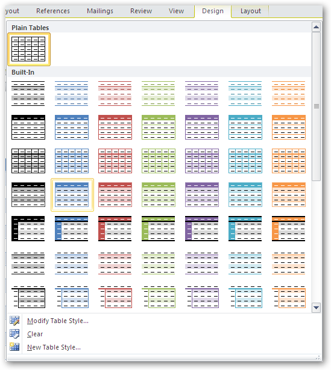

WTableStyle class represents table style in the Word document. Table style defines a set of formatting characteristics that can be applied to the table.

Figure 41: Table Styles
You can apply the Word built-in table styles by using the WTable.ApplyStyle method with Built-inTableStyle enumeration parameter which specifies the built-in table style.
 Note: Essential DocIO currently provides support
for built-in table styles in Word2007 and Word2010 formats.
Note: Essential DocIO currently provides support
for built-in table styles in Word2007 and Word2010 formats.